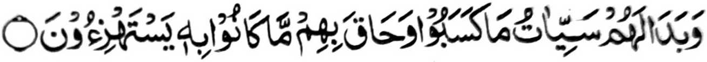

So Muhammad bin Munkadir (Rahmatullahi ‘Alaihi) na miyakalangad sa Hadith. Miyaka-isa a gagawi-i na tanto sekaniyan a miyakagora-ok si-i ko sambayang iyan a Tahajjud. Na aden a miniza-on o inoto, na pitharo iyan, “Kagiya ko pembatiya ako, na siyagadan aken angka-iya a manga katharo o Qur’an:

‘Go mapayag kiran so manga rarata a pinggalebek iran, go katangkalan siran o piyamageregan niran (a siksa).’” (Surah Az-Zumar: 48)
Tanto sekaniyan a pekhalek ago makamboboko si-i ko masa a kaphatay niyan, go pitharo iyan a giya ngkanan a manga katharo o Qur’an na tomatalingoma rekaniyan.